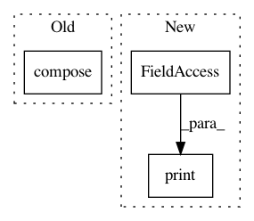

e4833d449452dc9b47a4e23c22c4b2b8abc7a682,geomstats/learning/exponential_barycenter.py,,_default_gradient_descent,#Any#Any#Any#Any#Any#Any#Any#,14
Before Change
while iteration < max_iter:
if not (grad_norm > epsilon or iteration == 0):
break
centered_points = group.compose(group.inverse(mean), points)
logs = group.log_from_identity(point=centered_points)
tangent_mean = step * gs.einsum(
"n, nk...->k...", weights / sum_weights, logs)
mean_next = group.compose(
After Change
exp_bar : array-like, shape=[n,n]
The exponential_barycenter of the input points.
print(points.shape)
ndim = 2 if group.default_point_type == "vector" else 3
//if gs.ndim(gs.array(points)) < ndim or len(points) == 1:
// return points[0] if len(points) == 1 else points
In pattern: SUPERPATTERN
Frequency: 3
Non-data size: 3
Instances
Project Name: geomstats/geomstats
Commit Name: e4833d449452dc9b47a4e23c22c4b2b8abc7a682
Time: 2020-04-13
Author: ninamio78@gmail.com
File Name: geomstats/learning/exponential_barycenter.py
Class Name:
Method Name: _default_gradient_descent
Project Name: Ambrosys/glyph
Commit Name: f76b988862e07b4dcfae78ff8fa98e2e77fc7f1d
Time: 2017-03-21
Author: mquade@uni-potsdam.de
File Name: examples/symbolic_regression.py
Class Name:
Method Name: main
Project Name: Ambrosys/glyph
Commit Name: f76b988862e07b4dcfae78ff8fa98e2e77fc7f1d
Time: 2017-03-21
Author: mquade@uni-potsdam.de
File Name: examples/nd_example.py
Class Name:
Method Name: main